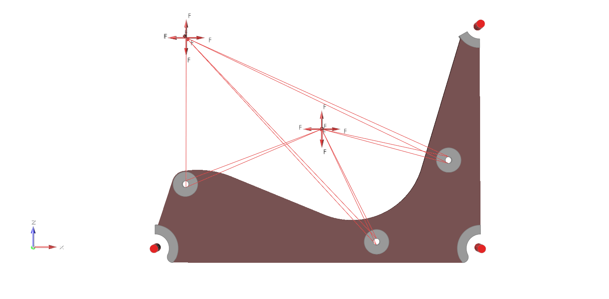
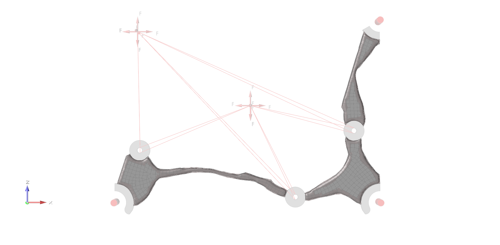
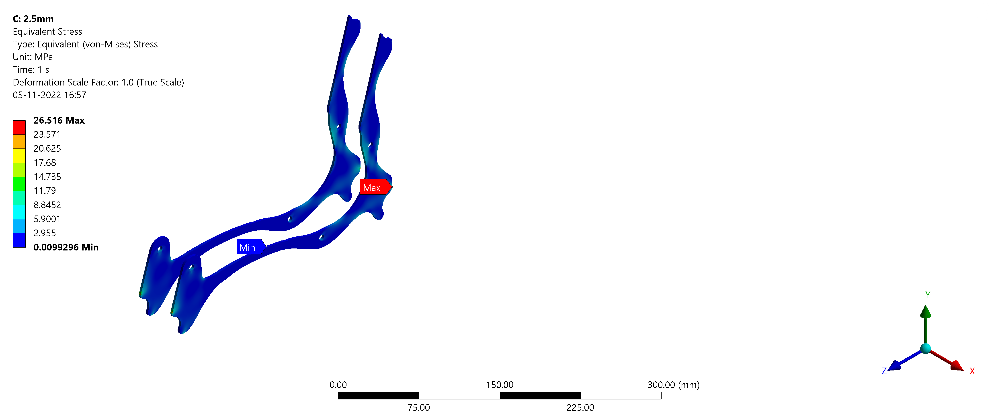

Transmission-bracket optimization
Developed and analyzed transmission mounting brackets, using topology optimization to remove material around the load paths.
Design optimization / simulation

Brief
The engine, gearbox, and differential needed secure mounting through acceleration, braking, cornering, and impact load cases, with less bracket mass.
My work
Co-led almost all transmission development with another team lead, including bracket design and optimization. The figures here focus on the gearbox bracket from that shared work.
- Defined bracket interfaces and load cases for the transmission components.
- Used Altair Inspire to develop lighter bracket geometries.
- Checked the optimized brackets in ANSYS across the report’s acceleration, braking, drop, rollover, and cornering cases.
Engineering detail
One component, several load cases
The transmission report studies engine, gearbox, and differential brackets separately. The initial geometry, optimized candidate, and stress contour shown here all refer to the gearbox bracket. The contour is the acceleration load case; it does not represent every operating condition.
Reading the mass comparison
The 59.5% figure applies to the gearbox-bracket model comparison. The chain-drive project separately reports the broader system’s weight and assembly-time improvements.

Result
The CAE study reports a 59.5% weight reduction between the modeled gearbox-bracket designs.